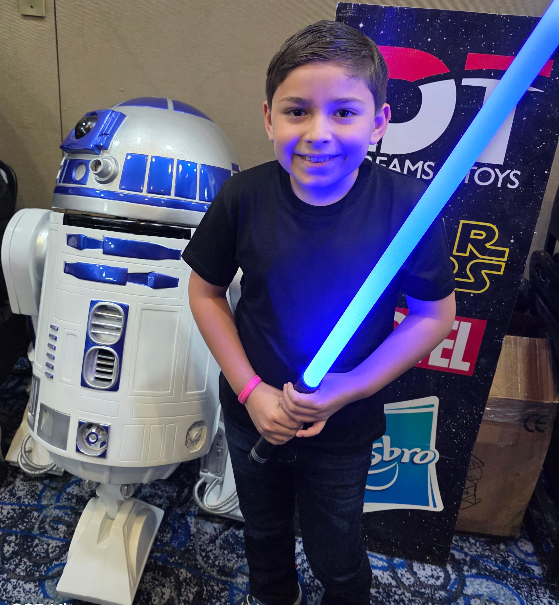

Hace mucho tiempo, en una galaxia muy, muy lejana....
Episodio VIII
LA FIESTA DE FAUSTO
¡La galaxia está de fiesta! El valiente Caballero Jedi, FAUSTO, está a punto de cumplir 8 años y su conexión con la Fuerza es más poderosa que nunca.
Para celebrar esta gran victoria contra el lado oscuro del aburrimiento, el Consejo Jedi ha decretado una reunión de todos los jóvenes Padawans.
Tu presencia es crucial para ayudar a Fausto a completar su entrenamiento y traer equilibrio a la Fuerza. Se requiere tu habilidad con el sable de luz, tu destreza en el combate y, sobre todo, ¡tus ganas de divertirte!
Prepara tu mejor disfraz de tu personaje favorito y únete a esta misión... ¡La Resistencia te necesita!
¡La Fuerza te llama!
¡Acompaña a Fausto en su 8º cumpleaños!
Cuándo: Domingo, 23 de Noviembre
Hora: 10:00 AM
Dónde: Lumy Magic Fiestas Infantiles
Calle Faisán 10, Granjas Moderna, 07460 Gustavo A. Madero, CDMX
¡Puedes venir disfrazado!
¡Que la fiesta te acompañe!